Plot fit of detection functions and histograms of data from distance sampling independent observer (io) model
Source: R/plot.io.R
plot.io.RdPlots the fitted detection functions for a distance sampling model and histograms of the distances (for unconditional detection functions) or proportion of observations detected within distance intervals (for conditional detection functions) to compare visually the fitted model and data.
Usage
# S3 method for class 'io'
plot(
x,
which = 1:6,
breaks = NULL,
nc = NULL,
maintitle = "",
showlines = TRUE,
showpoints = TRUE,
ylim = c(0, 1),
angle = NULL,
density = NULL,
col = "lightgrey",
jitter = NULL,
divisions = 25,
pages = 0,
xlab = "Distance",
ylab = "Detection probability",
subtitle = TRUE,
...
)Arguments
- x
fitted model from
ddf- which
index to specify which plots should be produced.
1 Plot primary unconditional detection function 2 Plot secondary unconditional detection function 3 Plot pooled unconditional detection function 4 Plot duplicate unconditional detection function 5 Plot primary conditional detection function 6 Plot secondary conditional detection function Note that the order of which is ignored and plots are produced in the above order.
- breaks
user define breakpoints
- nc
number of equal-width bins for histogram
- maintitle
main title line for each plot
- showlines
logical variable; if TRUE a line representing the average detection probability is plotted
- showpoints
logical variable; if TRUE plots predicted value for each observation
- ylim
range of vertical axis; defaults to (0,1)
- angle
shading angle for histogram bars.
- density
shading density for histogram bars.
- col
colour for histogram bars.
- jitter
scaling option for plotting points. Jitter is applied to points by multiplying the fitted value by a random draw from a normal distribution with mean 1 and sd jitter.
- divisions
number of divisions for averaging line values; default = 25
- pages
the number of pages over which to spread the plots. For example, if
pages=1then all plots will be displayed on one page. Default is 0, which prompts the user for the next plot to be displayed.- xlab
label for x-axis
- ylab
label for y-axis
- subtitle
if TRUE, shows plot type as sub-title
- ...
other graphical parameters, passed to the plotting functions (
plot,hist,lines,points, etc)
Details
The structure of the histogram can be controlled by the user-defined
arguments nc or breaks. The observation specific detection
probabilities along with the line representing the fitted average detection
probability.
It is not intended for the user to call plot.io.fi but its arguments
are documented here. Instead the generic plot command should be used
and it will call the appropriate function based on the class of the
ddf object.
Examples
# \donttest{
library(mrds)
data(book.tee.data)
egdata <- book.tee.data$book.tee.dataframe
result.io <- ddf(dsmodel=~cds(key = "hn"), mrmodel=~glm(~distance),
data=egdata, method="io", meta.data=list(width=4))
# just plot everything
plot(result.io)
 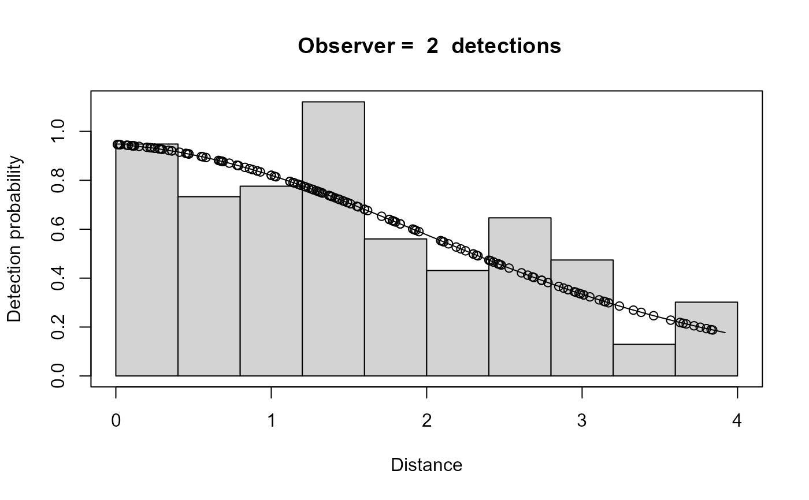
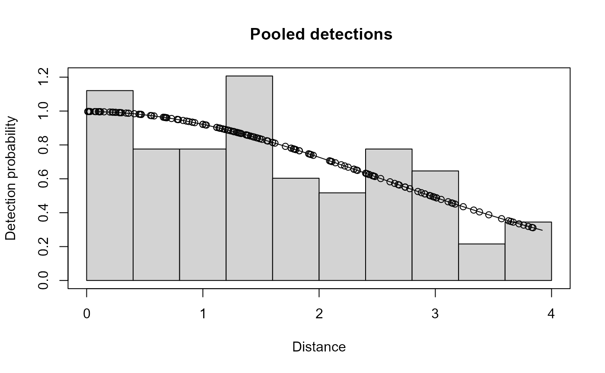
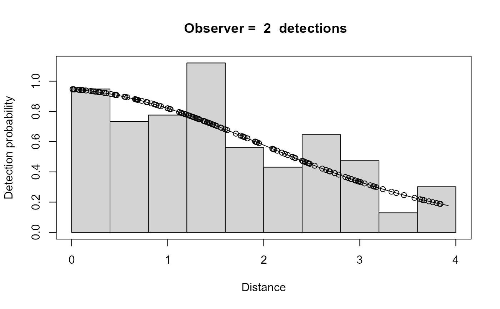
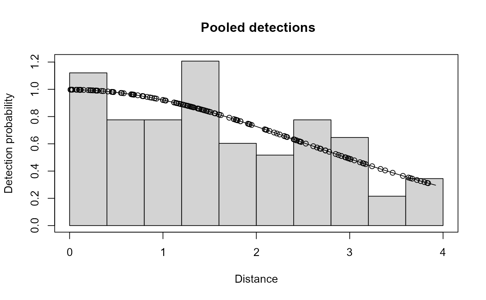
 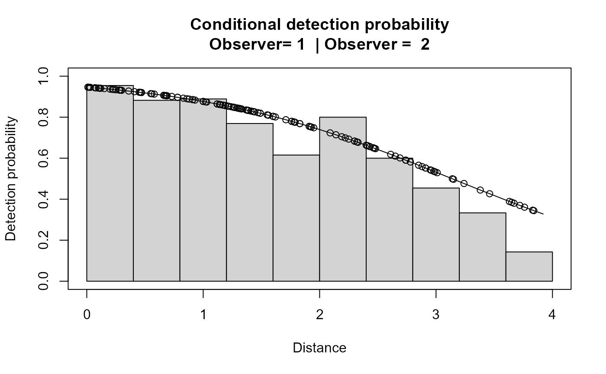
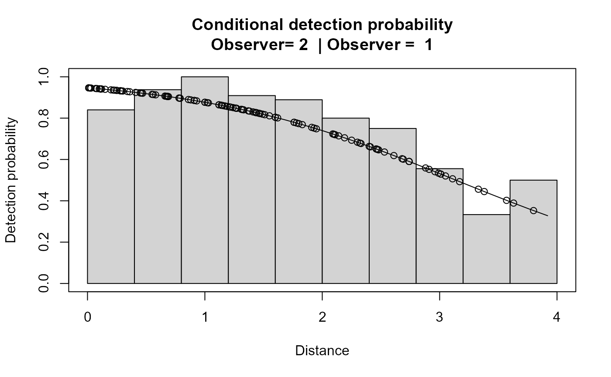
# Plot primary and secondary unconditional detection functions on one page
# and primary and secondary conditional detection functions on another
plot(result.io,which=c(1,2,5,6),pages=2)
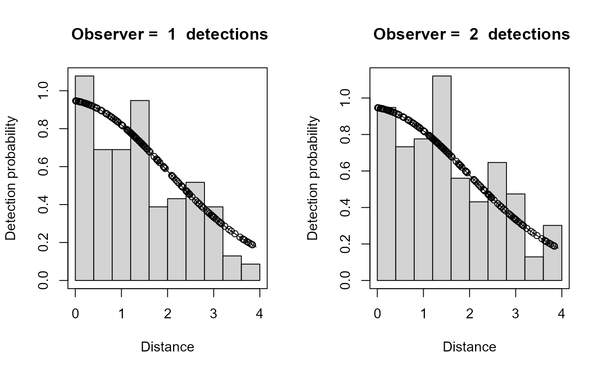
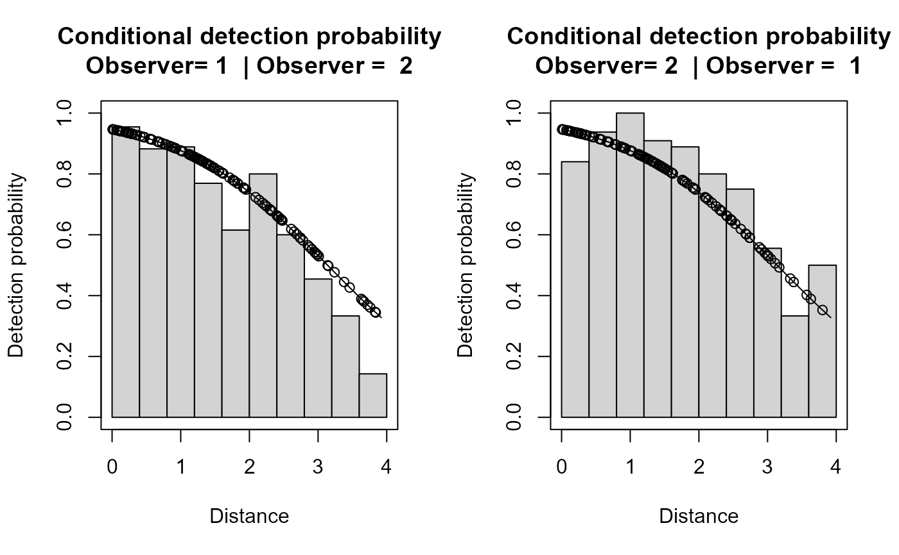
# }
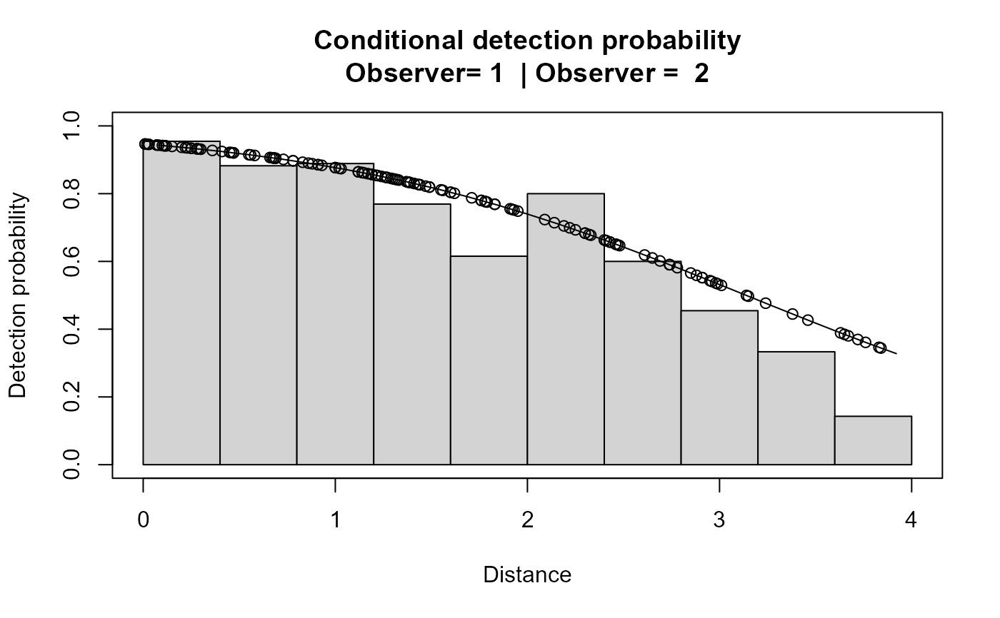
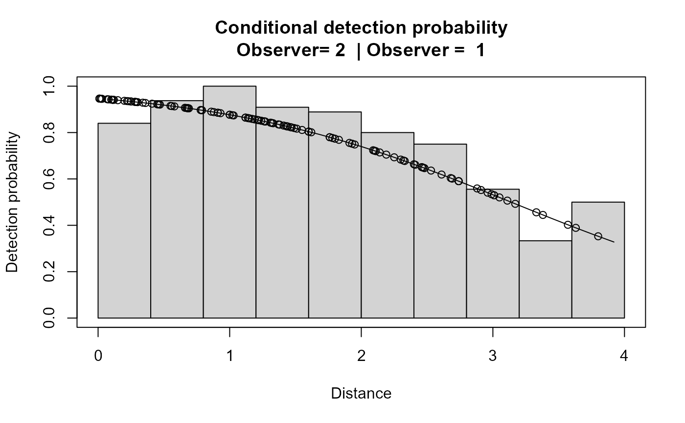
# Plot primary and secondary unconditional detection functions on one page
# and primary and secondary conditional detection functions on another
plot(result.io,which=c(1,2,5,6),pages=2)
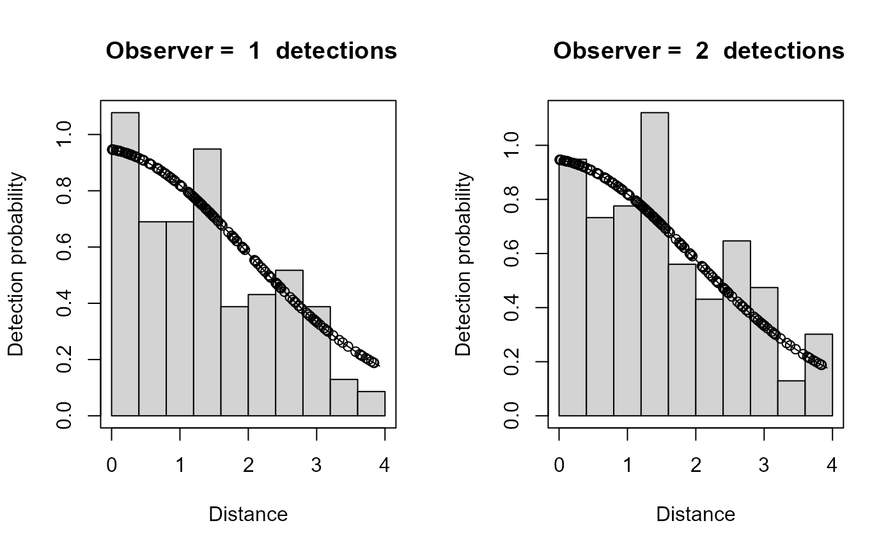
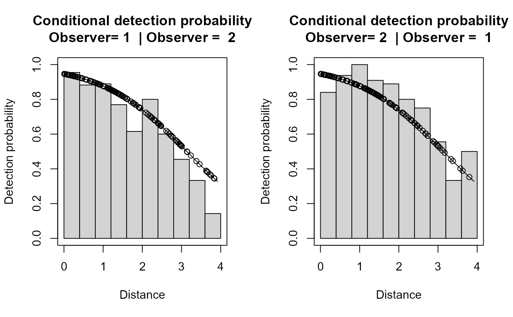
# }